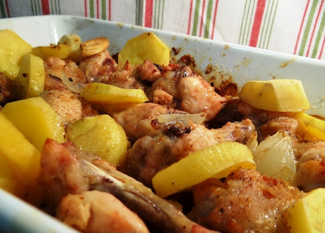
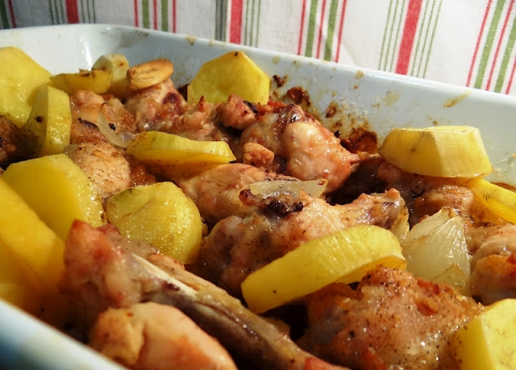
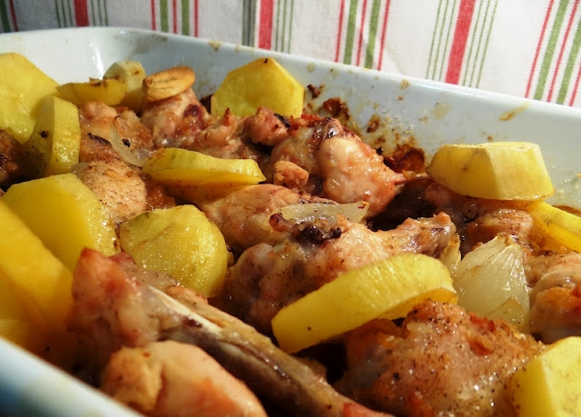
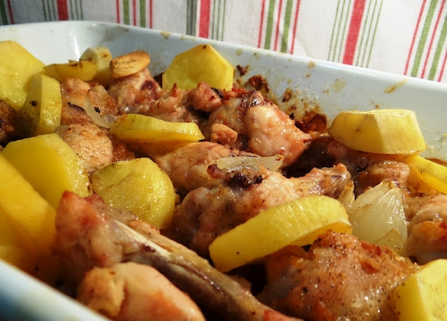

Asinhas de Frango com Batatas
Ingredientes 600 g de coxinha da asa de frango suco de 1 limão 1 pitada de pimenta-do-reino 2 sachês de MAGGI® MEU SEGREDO® Refoga 2 batatas com casca em meia-lua 2 ramos de orégano fresco
 



Modo de Preparo 1. Em um recipiente, tempere o frango com o suco de limão, a pimenta-do-reino e o MAGGI MEU SEGREDO. 2. Cubra com plástico-filme e deixe tomar gosto em geladeira por 15 minutos. Misture as batatas para pegar o tempero. 3. Em uma assadeira arrume as coxinhas, as batatas e os ramos de orégano. 4. Cubra com papel-alumínio e leve ao forno médio-alto (200°C), preaquecido, por cerca de 30 minutos. 5. Retire o papel-alumínio e asse por mais 30 minutos ou até ficar dourado. 6. Se desejar vire os pedaços na metade do tempo. Sirva.
Video para Auxiliar a Receita